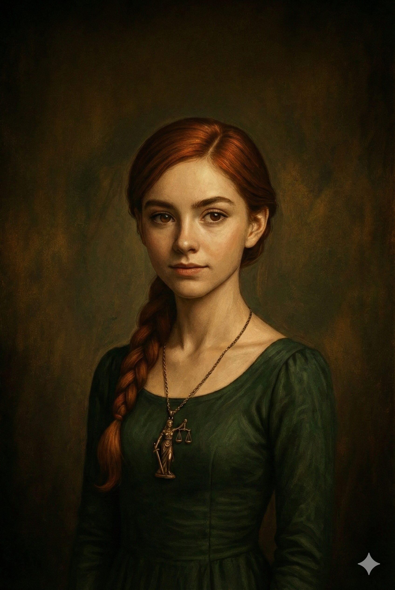
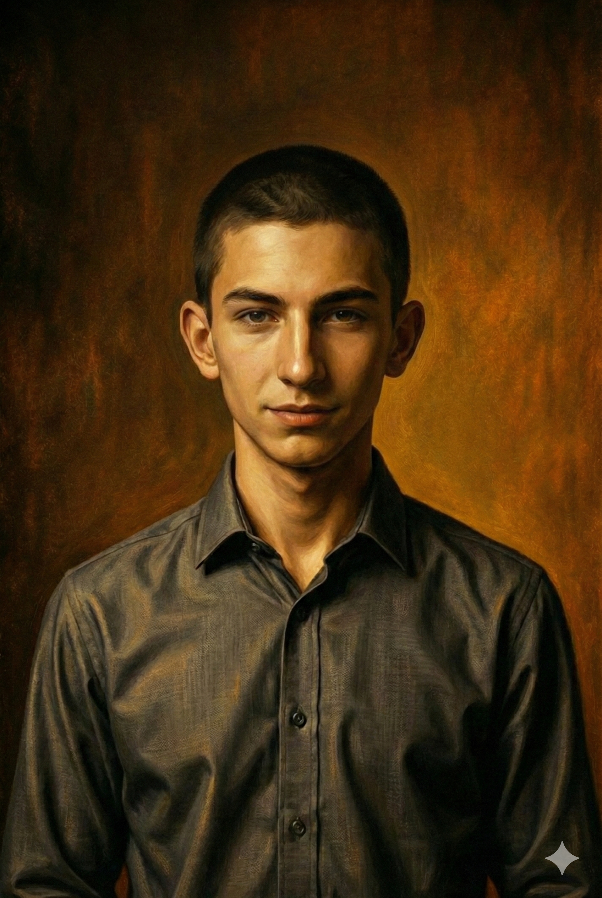
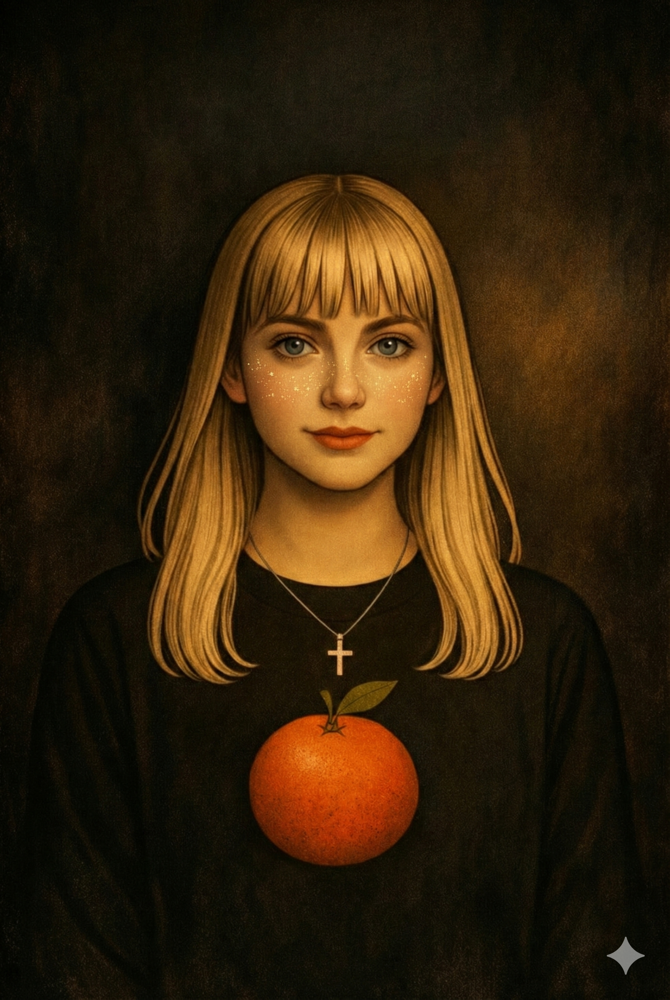
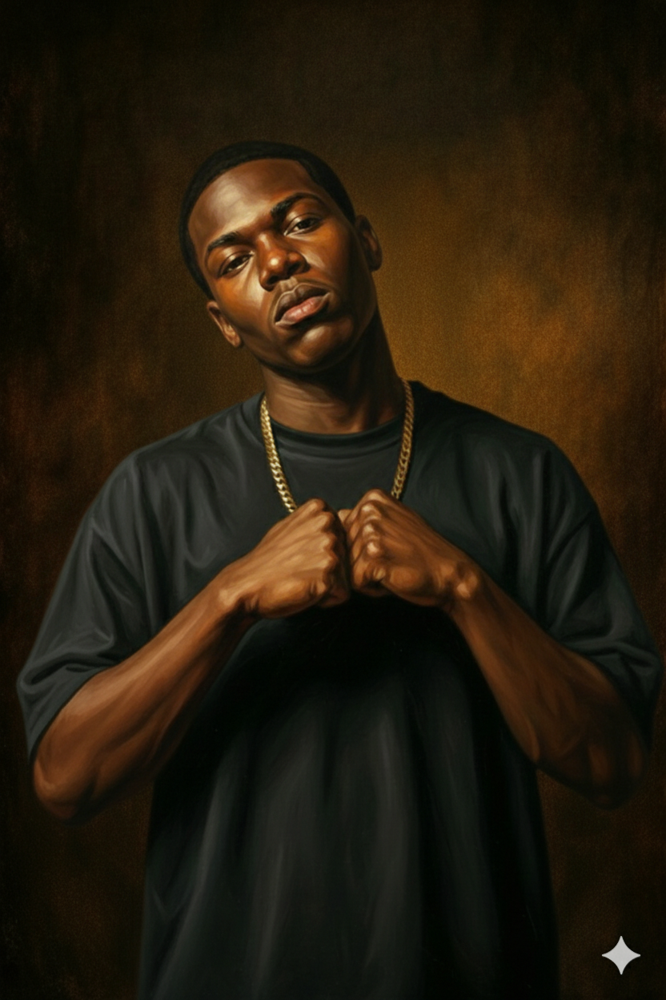
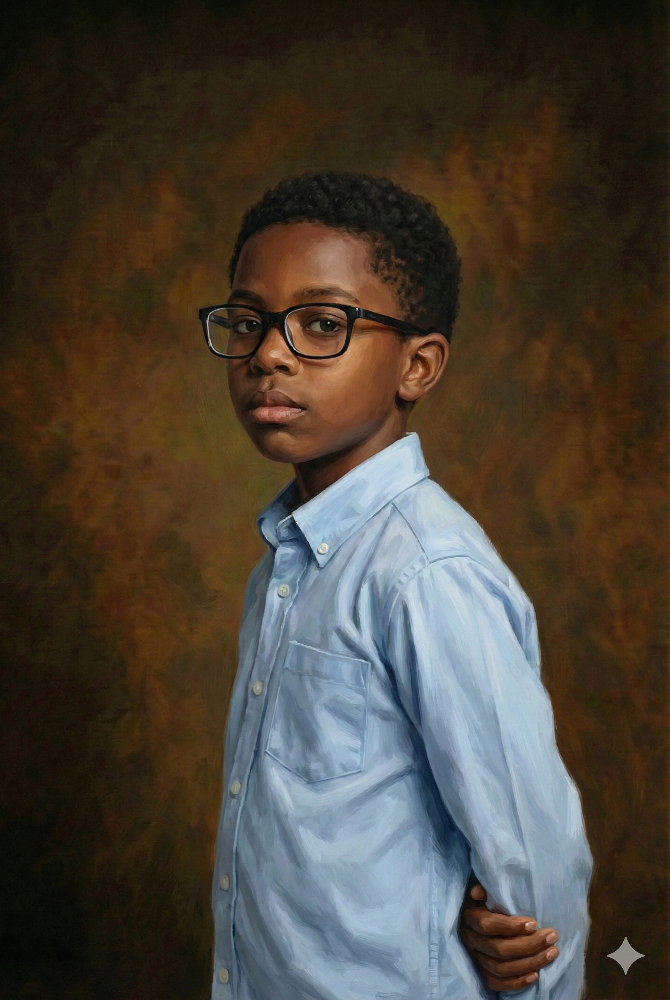
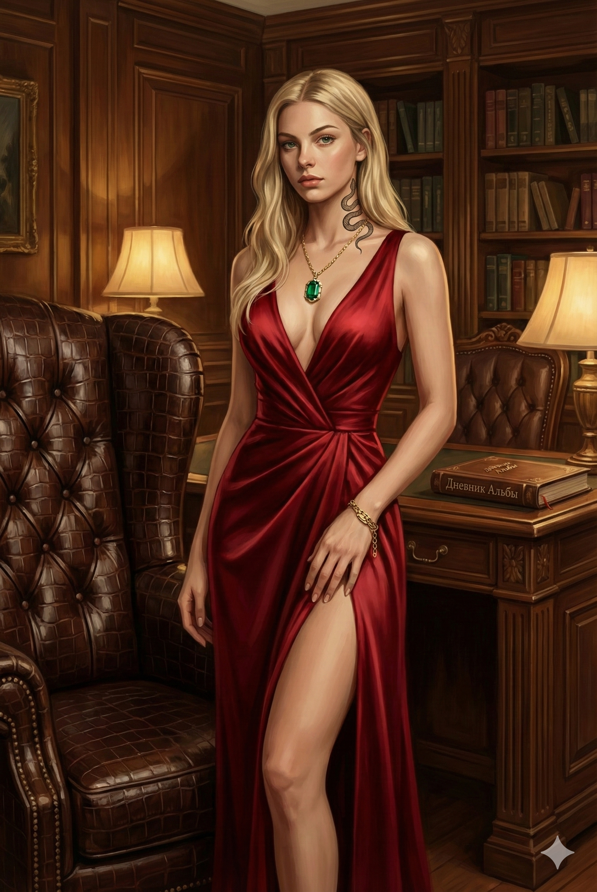

НАЖМИТЕ F11
ПОЛНОЭКРАННЫЙ РЕЖИМ
Третий раздел

Диана

Джон
Глава 6. 🔁 Инверсия
1/8 👭 Сёстры
01.01.2020. Wednesday. Бартон
👑 Из видеоблога Альбы
Вернулись домой. Желание — завалиться в душ с бутылкой воды и пару часов лежать в ванной. Лиззи выглядит бодрее. Что значит выпить пару бокалов шампанского. Надеюсь, тётки дома не будет, и нас не станут напрягать вопросами, где мы были, словно это на что-то повлияет.
— Сделаешь блинчики? — спрашивает Лиззи, как только мы вошли в квартиру.
— Ты шутишь? Пожарь яиц, если голодная, — безжизненно кинула ей.
— Ладно, извини. Может, тётка что-то купила…
Я заглядываю в спальню — спит, похрапывая. Перегар стоит невыносимый. Закрыла дверь в её комнату.
— Очень сомневаюсь… Не шуми. Пусть спит алкоголичка.
Иду прямо в душ, раздеваясь по дороге, бросая вещи в разные стороны.
Звонок в дверь.
Блядь. Кого там принесло?
— Я открою, — говорю, глядя на Лиззи, которая выглядит испуганно. — Ждёшь кого-то?
— Н-е-е-т, — протянула она.
Иду к двери, прокручиваю один раз замок, открываю.
Передо мной стоит высокий молодой мужик. Мужик, потому что выглядит он плохо на свои годы. С вытянутым лицом, мутными глазами и длинным уродливым носом. В руках держит шоколадку, словно пришёл в детский сад завлечь ребёнка.
— Добрый день, — говорит он, переминаясь с ноги на ногу.
— Дядя, ты кто? — кивнула ему.
— Меня зовут Бартон. Лиззи вам обо мне не говорила?
— Подожди, я же тебя видела… гандон! — сказала я, вспоминая, как он провожал сестру.
Глава 6. 🔁 Инверсия
1/8 👭 Сёстры
01.01.2020. Wednesday. Бартон
Выхожу в подъезд, чтобы быть к нему ближе, он делает шаг назад. Тем временем Лиззи остаётся в коридоре. Слышу, как дрожит её дыхание. Пульсация вибрирует даже от бетонного пола.
— Я пришёл, чтобы попросить разрешения встречаться с вашей сестрой. Я её очень люблю, — мямлит он.
Я перебиваю:
— Заткнись нахуй!
Попыталась прикрыть дверь, но Лиззи вставила ногу. Пытается выйти и вмешаться. Я не позволяю ей это сделать.
— Альба, прошу, давай поговорим! Он нормальный.
Я её проигнорирую. Всё внимание на Бартона.
— А теперь слушай внимательно, извращенец, — начала я, отойдя от двери. Медленно шагаю вперёд, пытаюсь создать давление. Он стоит на месте. Мне страшно. Я ведь не знаю, кто он и на что способен. Но и он не подозревает, кто я и на что способна. Упираюсь лбом ему в грудь, уловив запах его старой футболки. Наступаю ему на ногу и поднимаю глаза. — Если вдруг ещё раз я тебя увижу рядом с Лиззи… или просто буду гулять со своей компанией, и ты нам попадёшься… Или ты позвонишь, или напишешь ей — то произойдёт такое, чему лучше не случаться.
Он начинает отступать, а я подхожу к нему всё ближе и ближе, пока он не врезается затылком в стену.
— Вы меня неправильно поняли. У меня к ней чувства, а не то, что вы думаете, — робко защищался этот гандон.
— Это ты меня всё ещё не понял, — говорю шёпотом, пальцы дрожат, голос прыгает. — Я же не буду писать на тебя заяву. Мои друзья просто вырвут тебе яйца. Они кастрируют тебя. Выкупаешь?
Глава 6. 🔁 Инверсия
1/8 👭 Сёстры
01.01.2020. Wednesday. Бартон
Лиззи вцепилась в правую руку. Весь мой монолог она пыталась меня перебить, но ни я, ни он её не слушали.
— Он хороший, добрый, внимательный, — перечисляет Лиззи его надуманные качества, — такое тоже бывает, Альба. Отстань от него!
— Ты ещё здесь? — спрашиваю я, сжав кулаки.
— Я вас понял. Пока, Лиззи, — сказал он и убежал, стуча ботинками по ступеням.
Запах в подъезде никогда не был свежим, но теперь он ощущался максимально мерзко. Сестра захотела догнать его, но я крепко хватаю её за руку, вогнав свои ногти ей под кожу.
— Домой!
— Я тебя ненавижу! Какая же ты тварь. Думаешь лишь о сексе. А у нас с ним всё по-другому.
Затолкала её в квартиру. На это потребовалось пару минут. Закрыла дверь на четыре оборота.
— Не реви! Разбудишь тётку, — говорю спокойно, убирая волосы с лица.
— Будь ты проклята, Альба! — орёт она. — Ты лишь прикидываешься хорошей и правильной сестрой. Но кто тебе давал право управлять мной? Ты судишь меня по себе, несмотря на то, что мы слишком разные. Потрахаться с двумя за одну ночь — вот кто ты.
Мне плевать на то, что она говорит, ведь это никак не касается ситуации вокруг неё. Лиззи пытается причинить боль фактами. Фактами, которые установила я. Которые я контролирую.
— Ты наивная дурочка. Не могу поверить, что моя сестра — одна из тех тупых дурочек, которые ведутся на лапшу. Эта тварь — уже взрослый мужик. И лучше ты будешь ненавидеть меня, чем потом я буду ненавидеть себя, когда он тебя изнасилует.
Глава 6. 🔁 Инверсия
1/8 👭 Сёстры
01.01.2020. Wednesday. Бартон
Лиззи нервно пытается найти его номер в своём телефоне и позвонить. Я выхватила его.
— Пока я здесь и никуда не уехала — телефон будет у меня. Ты снова потеряла моё доверие.
— Отдай! — кинулась мне в лицо.
Но я была сильнее. Просто толкнула её, и она упала. Глухо.
Испуг задержался во мне проездом. Я не хотела её ранить.
Лежит, плачет, орёт как истеричка.
Пауза.
Но, похоже, всё нормально. Пытается надавить на жалость, показать из себя жертву, чтобы я опустилась к ней и обняла.
Не в этот раз. Больше не прокатит такое. Пора взрослеть. В таких ситуациях любить нужно без нежностей.
С комнаты выползает тётка. Взъерошенная, помятая, вонючая.
— Чего вы так разорались, а? — хрипло выдавила она.
Мы обе пренебрежительно окинули её взглядом.
— Иди нахуй! Поняла? — бросаю ей в лицо и иду в ванную. Я здесь уже хозяйка больше, чем она, поэтому имею право так с ней говорить.
И вообще-то я хотела просто искупаться. Заёбали.
— Ого, что это с ней? — спрашивает тётка, испугавшись.
— Забей, — ответила Лиззи и побежала в зал к своему медведю плакать и страдать.
Глава 6. 🔁 Инверсия
1/8 👭 Сёстры
02.01.2020. Thursday. План разрушения
🗒 Из блокнота Вероники
Попытка на Новый год отобрать волшебные очки провалилась с треском. Нужен новый способ. Очки Ричарда пока остаются секретом. И я всё больше думаю, что он просто стёбется. Хотя... этот кретин всегда точно говорит, кто в кого втюхался, а кто делает вид. На НГ сказал то, что известно было только мне — в кого втюхалась моя одноклассница. Либо он гений сплетен, либо реально что-то знает.
Короче. Надо ждать удачного момента.
Я сижу на полу и рисую рожу Джулии с кривыми зубами и прыщами, пока она бегает по дому в поисках чистых джинсов. Музыку соседей, которую слышно через стены, я глушу аудиомангами.
— Ты хоть умылась? — спрашиваю с пренебрежением.
— Сейчас пойду, умоюсь.
— Угу. Только не вытирайся моим полотенцем! После тебя оно потом пахнет, как будто на нём наша кошка родила.
— Это после моего крема! — орала она из ванной.
Теперь понятно, что нужно захватить с собой, когда буду выносить мусор.
— А ты не хочешь прогуляться? Ты не выходила уже два дня.
— А вы разве не вдвоём будете?
— Не знаю. Я видела из окна, как Глен и Ричард болтались. Можешь к ним пойти.
— Ещё чего.
— Я думала, ты сохнешь по Глену.
— Уже засохла.
— Ты знала, что у тебя биполярка?
Я закатила глаза. Из коридора раздаётся глухой грохот.
Глава 6. 🔁 Инверсия
1/8 👭 Сёстры
02.01.2020. Thursday. План разрушения
— Ты жива там?
— Это я сапоги обувала и не удержала равновесие!
Господи, какая же она неуклюжая, а-а-а.
— Всё, я ушла. Помой посуду!
— Я вчера её мыла! Пошла нахуй, — рявкнула ей в спину.
Хлопок двери. Джулия побежала к своему ненаглядному Алексику. Я расцарапала её нарисованный портрет, сожмякала и бросила огрызок на её кровать.
Я ещё пару ласковых прошептала ей вдогонку. Меня прервало СМС.
📱 INSTAGRAM DIRECT
Опа. Написал первый. Только вот уже поздно. Теперь — пусть сохнет он. Я умею быть милой. А эти парни такие тупые… Взять хотя бы Алекса.
Мамы дома нет. Выйду без шапки. Пойду сделаю причёску, чтобы зацепить его. Вдруг сегодня сработает.
Глава 6. 🔁 Инверсия
1/8 👭 Сёстры
02.01.2020. Thursday. Фу
🗒 Из блокнота Вероники
Болтаемся по Индари. Сначала постояли на месте, где летом футбольное поле, а потом пошли к качелям, на другую сторону района. Ветер немножко задувал в уши. Но это того стоило. Глен пялится на меня так, словно наконец-то влюбился. По крайней мере, мне так хотелось думать.
Ричард жуёт резинку и пинает носком сугробики.
— Там твоя сестра с Алексом, — сказал он вдруг.
Я вскинула голову. И правда. Джулия и её любимый сидят на его куртке на лавочке. Как заботливо с его стороны. Только вот у неё такая задница, что можно сразу садиться на лёд — холодно не будет.
Он что-то жестикулирует, а их телефоны лежат рядом на качелях.
Я хватаю Глена за рукав, пока Ричард отвечает на телефонный звонок.
У меня появился план. На Новый год я подсмотрела графический ключ от телефона Алекса, и, надеюсь, за пару дней он его не изменил. А сейчас — придумала, как разрушить их отношения: нужно получить его телефон, и с его странички написать разным девочкам кучу комментов, какие они красивые и т. д. Пролайкать их, а потом, типа невзначай, вечером показать Джулии, как на самом деле он её «любит», что пишет другим.
— Пойдём к ним. Подыграешь мне?
— В чём?
— Подойдём как ни в чём не бывало, поболтаем, а затем ты кинешь в Джулию снежком. Будешь дразнить её, пока она за тобой не погонится, а потом ты её вон там, за гаражами, повалишь. Только это между нами. Не разболтаешь?
Смотрит на меня как на сумасшедшую.
— Нафига это тебе? И что, если Алекс мне морду набьёт?
Глава 6. 🔁 Инверсия
1/8 👭 Сёстры
02.01.2020. Thursday. Фу
— Пожалуйста, — я сделала большие глаза. — Мне просто надо… кое-что. А потом проси что хочешь. Ну… почти всё.
Он пожимает плечами. Мнётся на месте. Поглядывает то на Джулию, то на меня.
— Ну окей. Будешь должна.
Когда мы подошли, я мило улыбнулась.
— О, привет, семейка! А вы тут романтичничаете?
— Не твоё дело, — буркнула Джулия.
— Привет, Алекс, — сказала я нарочито мягко.
Он кивнул.
Мы болтаем, Ричард всё ещё говорит по телефону, а Глен словно забыл, о чём я его просила. Я незаметно дёргаю его за рукав и поднимаю брови, кивая в сторону этой сладкой парочки. И тут он начал «шоу».
Слепил снежок и бросил в Джулию. Она вскрикнула от неожиданности.
— Ты чё, офигел?! — закричала она.
— Упс! Не удержался! — сказал он, кинул ещё и побежал.
Джулия, как я и ожидала, рванула за ним по сугробам. Он дал себя догнать у гаражей. Она валит его на снег, но он выкручивается и начинает её щекотать, валять, пока она смеётся.
— Ты так и будешь смотреть, как твою девушку лапает другой? — с осуждением спросила я Алекса.
— Нет, конечно! — бросил он и побежал к ним.
Глава 6. 🔁 Инверсия
1/8 👭 Сёстры
02.01.2020. Thursday. Фу
Вот идиот.
Я подхожу к качелям и беру его телефон. Что за факап?
«Разблокируйте с помощью лица или введите PIN»
А-а-а-а-а. Скотина. Поменял.
Смотрю за гаражи — Глен справился. А я — нет. И что теперь делать?
— Да я шучу! Расслабься! — орал Глен. — Мы же друзья. Я не мешаю вашей «великой» любви!
Снова провал. Почему мне так не везёт? Сначала с очками, теперь с телефоном. И почему так везёт Джулии? Не понимаю, что они в ней находят. Ленивая, неуклюжая, неаккуратная. Фу. Остался последний вариант — найти в интернете заговор и навести порчу. Ну а что? Мама же как-то приворожила отчима. Правда, он теперь бухает как свинья... Зато Джулии будет не привыкать. Она ещё та свинка Пеппа. Кстати, такое ведь и с Гленом проделать можно. Хм, а это идея.
Глава 6. 🔁 Инверсия
1/8 👭 Сёстры
02.01.2020. Thursday. Тревога
📓 Дневник Джессики
Задержка третий день.
И я точно помню, что месячные должны были начаться ещё в прошлом году.
Сижу в ванной на закрытом унитазе, уставившись в стену. Зеркало запотело.
Я снова открываю календарь в телефоне. Щёлкаю назад. Потом вперёд. Потом снова назад… Это может быть стресс. Точно стресс. Или побочки от препаратов. Или инфекция. Или сбой. Или... Я даже не решаюсь открыть Гугл. Боюсь, что, если введу «задержка», там будет какая-то неизлечимая болезнь. А у меня и так их уже букет.
Выключаю экран и бросаю телефон в раковину. Потом сразу достаю, чтобы проверить, не треснул ли. Нет, всё нормально. Это просто я ненормальная.
Скажу маме — начнётся скандал. Приплетёт сюда Джексона. Надеюсь, завтра пойдут. Пока буду молчать.
Глава 6. 🔁 Инверсия
2/8 Две полоски
04.01.2020. Saturday. Не твоё дело
📓 Дневник Джессики
С самого утра на нервах, потому что месячных нет. Уже сотню раз сходила в туалет, пересмотрела весь ТикТок и все рилсы.
До обеда ничего не ела. Лишь после того, как мама вернулась с подработки, смогла осилить два бутерброда и тарелку супа. Ела долго, кривилась и ссорилась с мамой. Она жутко раздражала своей колкостью, всем видом демонстрируя, что злится и обижается из-за моего побега на НГ. А меня это раздражает. Я фыркаю ей и не переговариваюсь, как она говорит.
— Чего ты такая нервная? — спрашивает мать. — Месячные начались?
Пауза.
— Наоборот — их нет уже почти неделю.
— Что ты сказала?
Она прекратила тереть тарелку.
— Что слышала. Месячных нет. Задержка.
Мама резко оторвалась от посуды. На секунду замерла. Капельки воды падают на пол, стекая с её пальцев. Потом как взорвалась:
— Ах, теперь ясно, с какой целью ты убежала на Новый год — трахаться. Как… как… Проститутка.
— Чего?! Ты дура? — крикнула я, бросив ложку на стол. — Я с ним не спала. Задержка началась ещё до этого.
— Не ври мне! С меня хватит уже твоих сказочек! Я читала про твой синдром. Ты будешь врать и не краснеть, что не раз было тобой доказано. Вот ты и решила с ним переспать, чтобы заинтересовать его. Я больше не верю ни единому твоему слову.
Глава 6. 🔁 Инверсия
2/8 Две полоски
04.01.2020. Saturday. Не твоё дело
Она кричит, не подбирая слов, строя всё новые и новые теории. Я видела, как её всю трусит, но это не оправдание. Она думает, что я такая непутёвая, но не знает, какой он… Он бы даже не стал. Снова Фрэнсис из-за неё икать будет. И всё из-за меня. Нет. Всё из-за давления, которое постоянно ставит меня под выбор.
— Да ты совсем рехнулась. Это, может, из-за грёбаного стресса! Или побочки от антидепрессантов.
— У меня сейчас инфаркт будет от твоих выходок, — перебивает меня, даже не слушая, что я ей пытаюсь сказать. Как обычно. Снова разговаривает с кем-то третьим в комнате, как шизанутая. — За какие грехи мне это??? Не дай бог она залетела! Какой позор. Что только о нас будут люди говорить???
Дыхание сжало. Стул подо мной качнулся, как будто я могла упасть. Теперь лечить нужно маму.
— Я не...
Она снова перебила:
— Матерью в четырнадцать лет станешь. Прекрасную дочь я воспитала.
Во рту пересохло. Глаза тоже. Просто резали. Без слёз. Я пожалела о сказанном. Как и предполагала, ей теперь ничего нельзя говорить.
— Это какой-то ужас. Зачем я вообще тебе сказала?
— А что, нужно было ждать, пока я бы пузо не увидела?
Это была уже не моя мама. Ещё один демон, который не смог меня до конца сломать внутри, поэтому нападает снаружи.
— Я не хочу тебя видеть!
Со скрежетом двинула стул назад и побежала в спальню. Навсегда — на пару часов. Вместо того чтобы поддержать меня и пожалеть, она выбрала наказывать меня своей обидой. Я знаю, что я виновата. Перед собой виновата. Но ничего не могу с этим поделать, как бы сильно ни боролась.
Глава 6. 🔁 Инверсия
2/8 Две полоски
04.01.2020. Saturday. Я знаю пароль
🎈 Из воспоминаний Леи
Я пыталась уснуть, как вдруг услышала крик из кухни. Мне стало страшно. Они снова ссорятся. Вдруг Джессика попытается убежать и на этот раз? Нужно быть начеку.
— Мама, — сказала я испуганно, выглянув из-за двери.
— Почему ты вечно подслушиваешь?!
— Я не специально. Я просто...
— У тебя тихий час.
— Как-то было не тихо.
— Вот не умничай.
— Я отнесу Джесси её телефон и пойду спать, хорошо?
— Она телефон оставила?
— Ну да, на столе. Возле своей тарелки.
Мама бросила на меня взгляд. Вытерла руки несвежим полотенцем, от которого пахло разной едой, и подошла к столу.
— Сейчас проверю, обманывает она меня или нет. Вот зараза. Точечки какие-то…
— Это графический ключ.
— Какой ещё ключ?
— Пароль.
— Ты его знаешь?
— Знаю. Я же рядом всё время. Подсмотрела.
Я почувствовала, как в животе сжалось, будто туда кинули ледышку.
— Сейчас же позвоню этому подонку Фрэнсису. Хватит моей девочке морочить голову! Нужно было сделать это ещё тогда у окна и не слушать психиатра. Не работают её методы.
Было страшно. Просто не хотелось ложиться спать, поэтому и решила помочь. Вот. Тем более… я тоже ненавижу Фрэнсиса за то, что он обижает моё солнышко Джесси.
Я разблокировала телефон, нарисовав змейку, и помогла найти номер Джексона.
Извините… но дальше я не слышала, потому что мама выбежала на улицу, чтобы никто не подслушал. Наверное, сильно ругала его и, даже, может быть, материлась. Потому что когда мама вернулась, то пошла в свою комнату и долго стояла на коленях перед иконой — просила прощения.
Всё. Больше я ничего не помню.
Глава 6. 🔁 Инверсия
2/8 Две полоски
04.01.2020. Saturday. Разбитый телефон
📗 Из рассказа Лиззи
Слышу, как Альба куда-то собирается. Двери в моей комнате закрыты, но слышно через стену, как она на кухне поздравляет кого-то с днём рождения.
Прекрасно. Ещё сейчас уйдёт, и тогда сиди весь вечер и всю ночь одна. Четвёртый день без телефона. Хоть на стену лезь. Завтра она уезжает, и наконец-то прекратится её больной контроль. Первым же делом я позвоню Бартону и приглашу его к себе. У нас будет время, чтобы побыть вместе. Будем обниматься, целоваться и целыми днями смотреть вместе сериалы, пока тётка на вахте. А в школе скажу, что заболела.
Хватит!
Я так больше уже не могу. Мне уже не десять, чтобы ей подчиняться.
Встаю со своей кровати и выхожу в коридор к сестре.
— Гони мой телефон! — сказала я грозно, как только могла. — Ты всё равно куда-то валишь.
— Завтра уезжаю, завтра и получишь, — отвечает она, не глядя, тем временем накрашивая у зеркала ресницы.
— Тебе нравится играть в плохую мамку? — попыталась её задеть.
— Только не вздумай опять орать. Мне сейчас на день рождения. Не хочу, чтобы у меня болела голова «до» него.
— А то, что болит моя — тебе наплевать?
— Пусть поболит. Может, там что-то начнёт шевелиться.
— Зашевелилось. Ты мне больше не указ!
— Ну-ну…
Это меня взбесило. Я бегу в залу, залезаю на шкафчик и с верхней полки достаю свой телефон.
— Давай его сюда! — сказала она мне, глядя своими злыми глазами, стоя в дверном проходе большой комнаты.
— Нет!!!
Глава 6. 🔁 Инверсия
2/8 Две полоски
04.01.2020. Saturday. Разбитый телефон
Альба подбегает ко мне и пытается вырвать из рук мой телефон. Я его сжимаю, пытаюсь укусить её за руку, но она ладонью толкает мою голову в стену. Я падаю, хватаясь за висок. Тупая ноющая боль пробирает череп. Она снова ударила меня, снова отобрала телефон.
— Успокоилась?
Я тяжело дышу. Голова ужасно болит.
— Гори в аду! — говорю ей и бегу в коридор.
Хватаю со шкафчика теперь её телефон, бегу в свою комнату, открываю окно и выбрасываю его со всей силы за гаражи. Альба хватает меня за футболку, как кошка за холку. Но это не помогает.
— Думаешь, ты МОЙ телефон выбросила? Мой телефон теперь тот, который лежит сейчас в зале! Так что считай, что ты сделала только хуже, и весь вечер — без интернета.
👑 Из видеоблога Альбы
Вот сука малая. За день до отъезда такое устроить. Знает же, что я всё равно буду стоять на своём, потому что права. Телефону пиздец, однозначно. Как я завтра без связи буду? Нужно спуститься, достать хотя бы симку.
Беру её телефон, надеваю быстро кроссовки, накидываю тёткину курточку и спускаюсь вниз с четвёртого этажа. Снега по щиколотку.
Ну и куда она его бросила? Как я его теперь найду?
Набираю свой номер…
«Вне зоны доступа». Ну понятно. Что, если он на гаражи упал и спрятался под снегом? Это как иголку в стоге сена искать. Уже темнеет. Да и плевать. По дороге куплю новую сим-карту. А пока зайду в свой аккаунт с телефона Лиззи, напишу Софии, что опоздаю.
Глава 6. 🔁 Инверсия
2/8 Две полоски
05.01.2020. Sunday. Незапланированное отцовство
Ⓕ Из воспоминаний Фрэнсиса
Глаза еле открылись. Ночь без кошмаров. Уже хорошо. Завибрировал телефон. Потянулся, полуслепой. Две минуты до будильника. Хорошо. Открываю… Имя отправителя плывёт перед глазами, но сообщение я вижу чётко. Ещё бы.
...
ЧТО, БЛ*ДЬ?
Я завис. Пару секунд — ни дыхания, ни мысли, ни жизни в теле. Просто пусто. Как будто ударили по лицу. А сердце замерло в сжатом положении, словно пряталось от чудовища.
Джессика, — подумал я первым делом. Сердце выдохнуло, со всей силы ударившись о рёбра. Вспоминаю вчерашний звонок её матери. Слёзы, просьбы и требования, чтобы я поклялся, что с ней не спал. Понимаю, что она от кого-то залетела. Точно не от меня. И представляю, что могло бы быть, если бы осенью я с ней переспал. Выдыхаю… Отец не я. Уже хорошо.
Фред? Саймон? Кто, блин? Её изнасиловали? Нет. Нет. Нет. Идиотские мысли. Разблокировал.
…Бл*ДЬ. …бЛ*дЬ. …БЛ*ДЬ!!!
Желудок скрутило. Грудь сдавило. Голова загудела, как в самолёте при падении.
Глава 6. 🔁 Инверсия
2/8 Две полоски
05.01.2020. Sunday. Незапланированное отцовство
📱 INSTAGRAM DIRECT
[Фото с тестом беременности — 2 полоски. Крупным планом.]
Роняю телефон на кровать, смотрю на него, словно он проклят и к нему больше нельзя прикасаться. Сейчас этот кусок железа радиоактивнее, чем кусок гранита с четвёртого энергоблока на Чернобыле. Руки трясутся, в ушах свистит, в горле пересохло. ПАНИКА. Сука… Бью кулаком по подушке со всей своей силы. Считаю до трёх: Раз… два… три. Слишком похоже на правду.
Перевернулся, вжал лицо, закричал ещё раз. Я бы мог подумать, что это рофл, если бы ебался с ней в презервативе. Дебил. Просто… Конченый. Полный. Дебил. Вот так за пару месяцев проебать свою жизнь. И что самое криповое… Первые несколько секунд я подумал, что это Джессика, и не испугался, зная, что я ни при чём. А тут — паника до блевоты.
Я не знал, что отвечают в такие моменты, но сразу же определил черту моих чувств к Альбе — страсть, искра, желание. В ПРОШЛОМ. А сейчас это всё превратилось в мерзость и отвращение. Я не хочу сейчас ребёнка! Тем более от неё. Не хочу быть отцом так рано, не хочу жениться, не хочу, чтобы была моей навсегда… Аборт она его сделает, и всё — как очередной кошмар проснусь и пойду в школу, удалю её номер и буду жить дальше. Беру телефон, нужно что-то написать. А может, её взломали?..
📱 INSTAGRAM DIRECT
09:10 | fran.jackson Ты уверена в этом тесте?
СМС висит непрочитанным.
5 минут.
10...
15.
Звонить страшно. Голос не вывезет. Не хочу показаться трусом, словно я испугался. Это может быть дешёвым разводом. Очень жестоким. Просто буду ждать. Нет! Не могу сидеть на одном месте. Надо встать. Надо хоть что-то сделать. Второй раз уже не проснусь. А так хочется, чтобы это было очередным кошмаром. Ещё одним сном во сне.
Почему она не пишет, что просто пошутила? Недостаточно пятнадцати минут? Иду в душ, надеясь, что, когда выйду, то уже будет ответ — это розыгрыш.
Но ответа не было. Я с холодной головой позвонил Джону. Он предложил встретиться у него и подумать вместе, что делать дальше.
Глава 6. 🔁 Инверсия
2/8 Две полоски
05.01.2020. Sunday. Треугольник
Ⓕ Из воспоминаний Фрэнсиса
Лечу на мотоцикле по скользкой трассе, чуть не влетел в отбойник. Казалось, хуже уже быть не может, но из кармана вылетает телефон… Падает на асфальт, припорошенный снегом.
— Вот блядь… Всё и сразу. Ещё бы машины переехали, и заебись, полный комплект.
Я поднял его, посмотрел. Экран треснут. Как и я. Но работает. Как и я.
Доехал к Джону за десять минут.
— Привет. Заходи, — открывает он двери.
Молча вхожу, пытаясь отогреть руки.
— Телефон разбил, — буркнул я.
— Ты вломился ко мне в воскресенье утром, чтобы сообщить, что разбил телефон, в день, когда узнал о беременности Альбы?
Мне стало смешно. Наверное, истерика.
— Ну, зато весело.
— Очень.
На самом деле — ни хрена не весело. Уже защитная реакция. Рефлекс. С людьми я всегда притворяюсь, показывая себя уверенным и в меру расслабленным. Им это почему-то нравится.
— Ты сам?
— Мама с Феликсом в Престоне.
Сажусь на диван, рассматривая свой телефон. Чувствую, как горят мои щёки от смены температуры. У Джона в квартире душно.
— Это пиздец. Хорошо, что не айфон. Не жалко.
— Да ладно. Был бы айфон — было бы ещё больше девок. А с девками, как мы поняли, и детей прибавилось бы.
— Эту хуйню нечем крыть.
— Ага.
Глава 6. 🔁 Инверсия
2/8 Две полоски
05.01.2020. Sunday. Треугольник
Я рассказал Джону про звонок от мамы Джессики. И что сначала подумал, будто это она беременна.
— Вот и настал день, когда я не хочу быть тобой, — сказал Джон, почесав затылок.
— Ты меня позвал, чтобы прикалываться, или что?
— Сорян. Просто это… сюр какой-то.
— Угу.
— Она ответила?
— Пытаюсь проверить, но экран весь треснут.
— Может, рофл? Фотошоп с тестом. Или вообще взлом?
— Думал об этом. Но мы ж... ну ты понял.
— У тебя не было резинок?
— На днюху не планировал, а на НГ в ванной… там всё быстро. Ты же знаешь Альбу.
Джон отмахнулся:
— Я Альбу НЕ знаю. Спит она С ТОБОЙ.
— А у тебя были?
— Весь ящик забит, мы с них шарики с Лиззи надували. Врубаешься? Они мне не нужны были… А вот тебе ещё как!
— Я думал, ты меня успокаивать будешь.
— Надо подумать…
Глава 6. 🔁 Инверсия
2/8 Две полоски
05.01.2020. Sunday. Треугольник
Проверил инсту:
— Не отвечает. Даже через этот долбаный экран вижу.
— А ты ей звонил? Или очко играет?
— Играет… Сейчас попробую.
Набираю кое-как через побитый экран, но гудки не идут: «На данный момент абонент не может принять ваш звонок…»
— Ладно, — встал Джон, взяв свой телефон. — Давай я наберу Лиззи, и мы всё выясним. Хотя… Давай-ка ты сам с ней будешь разговаривать.
— НЕТ! — отрезал я, спрятав руки в карманы. — Нет, пожалуйста, говори ты!
Он всё-таки позвонил. Поставил на громкую связь. Лиззи быстро взяла. Сказала, что видела тест с двумя полосками и быстро сбросила. Рядом, видимо, была Альба, и она не захотела при ней говорить.
— Пизда… — почесал я затылок. — Легче не стало.
Мы замолчали.
— Ту… ту, ту… ту, — начал напевать Джон. — Ща, погоди…
Он вдруг оживился и спел вполголоса, передразнивая Майкла Джексона:
— «The kid is not my son».
— Ты идиот?
Глава 6. 🔁 Инверсия
2/8 Две полоски
05.01.2020. Sunday. Треугольник
Джон начал копаться в телефоне и включил:
🎧 Слушать Michael Jackson — Billie Jean
Spotify:
YouTube (полная версия):
— А если ребёнок не от тебя? А от Фьючера? — предположил он.
— Бля. Точно. Я так обосрался, что даже не подумал об этом.
— Они же тогда в спальню ушли, — вспоминал Джон. — Пока ты с Дженнифер был в ванной.
— Я прекрасно помню. Напоминать не нужно.
— Так что, брат, шансы 50 на 50.
— Меньше.
— Почему?
Я почесал затылок. Было стыдно рассказывать, но он всё-таки мой лучший друг.
— Мы ещё пробовали на её день рождения, когда остались вдвоём в сауне, но у меня тогда была слабая эрекция, и я не кончил… но я успел прочитать утром, что какой-то ебучий предэякулят выделяется, и она могла залететь.
— Сколько раз вы ещё трахались, что я и не знаю?
— Три насчитал пока.
— Пока???
— Ты её случайно не…
— Даже не вздумай пиздануть эту хуйню, — пригрозил Джон, ткнув в меня пальцем. — Математик хренов.
— Не зря я телефон разбил, пока ехал сюда. Хоть чуть-чуть утешил.
— Могу ещё. Ты же не думаешь, что она его оставит? Она же… сама ребёнок.
— Если он от Фьючера — мне пох.
— А если нет?..
— Этого мы пока не знаем. Но чё-то я сомневаюсь, что она за пару дней смогла от него залететь.
— Мало ли. Не списывай его так рано. Напиши Фьючеру и спроси, сколько раз он её ебал, чтобы понять, чей этот бастард. А пока… — он сделал громче Billie Jean и поднял палец, — настало время профилактики безумия.
Глава 6. 🔁 Инверсия
2/8 Две полоски
05.01.2020. Sunday. Треугольник
Я засмеялся. Громко, нервно, как будто смеюсь вместо того, чтобы орать. Льюису я писать, позориться, точно не буду. Если он с ней переспал после того, как она забеременела от меня, это пиздец как унизительно. Нужно лучше думать, как сказать своему отцу. Возможно, придётся давать ей деньги на аборт. Только хрен она что получит! Если бы она не давала всем подряд, то был бы точно виноват я, а так жизнь её и наказала. У неё отец политик какой-то. Пусть и помогает. Может, вообще есть кто-то третий, а пишет почему-то сразу мне. Сама же лезла на меня. Лезла ко мне пьяного в сауне, приехала на день рождения, пришла в спальню, потом затащила в ванную.
— Фрэн, ау??? — сказал Джон, нагнувшись ко мне. — Ты выглядишь совсем хреново. Может, тебе налить виски?
— А у тебя есть?
— Если будешь, то найду.
— Да не, спасибо, поеду домой.
— Ты гонишь с меня? Тебя же всего трусит, словно током ударило.
— Бля, я не знаю…
— Пошли на кухню. Нужно расслабиться.
— Я на мотоцикле приехал.
— Я тебя отвезу. Всё нормально.
— Спасибо.
Глава 6. 🔁 Инверсия
2/8 Две полоски
05.01.2020. Sunday. Треугольник
Джон красавчик. Успокаивал меня. А вот телефон Альбы был выключен. Все попытки дозвониться заканчивались одним и тем же ответом робота.
— Слушай, — начал я, — ты на квартиру заходил после Нового года?
— Да, перед тем, как ключи отдать.
— Моей рубашки не находил?
— У тебя снова что-то пропало?
— Это прикол какой-то. Пропадает уже третья вещь. Сначала перчатки, потом шапка, а теперь — рубашка.
— Линзы, может, поменять? — заулыбался Джон.
— Очень смешно.
— Не было там рубашки. И почему я вообще один убирал там, не подскажешь?
— Сменим тему, а-ха-ха.
— Ты смеёшься — это уже хорошо. Ещё одну налить?
— Давай.
Я выпил. Стало спокойнее.
Перед тем как меня отвезти домой, пришло СМС, что Альба на связи. Меня снова начало трусить. Мы стояли в подъезде, и Джон кричал, чтоб я позвонил и поговорил с ней лично. Он набрал вместо меня и поставил на громкую. И я… молился, чтобы она не взяла. Не знаю почему. Наверное, боялся, что она скажет, что ребёнок точно от меня. Но она не взяла. А когда Джон довёз меня домой, абонент снова была вне зоны доступа.
Глава 6. 🔁 Инверсия
2/8 Две полоски
05.01.2020. Sunday. Тошнота
📗 Из рассказа Лиззи
Готовить завтрак Альба не собиралась. У неё рвота. Жрать нечего. Ещё и разбудила своим собиранием с самого утра. Поэтому, ничего не обнаружив в холодильнике, я пошла в магазин. Назад возвращалась не спеша. На улице — солнечно, небольшой мороз, слегка замёрзли пальчики. Пришлось покупать лапшу быстрого приготовления. Не в пачке, а одну в пластмассовой пиалочке, а вторую — в стаканчике. Обожаю такие.
— Ты где так долго лазила? А? — спрашивает она меня, выглядывая из ванной комнаты. Под глазами синяки. Её всё ещё тошнит. — Я даже в аптеку успела выскочить. Уже десять часов, а ты пропала. Мне через час ехать.
— Уже и в магазин пойти нельзя? Твоя аптека у нас в доме находится, а я ходила в супермаркет.
Её снова начало рвать. Двери ванны захлопнулись.
Ставлю чайник на газ. На кухонном столе тихо звонит мой телефон, который уже типа как Альбы.
Джон. Отвечу, пока она блюёт.
Руки трясутся. Шепчу, чтобы не услышала сестра:
— Алло… Это правда. Да, я видела тест.
Альба выглядывает из ванны, и я скидываю вызов.
— Кто тебе разрешал брать мой телефон??? — уставшим, замученным голосом пытается снова на меня давить.
— А ничё, что там моя сим-карта стоит и мне звонят?
— Тогда достань её, блядь, и поставь новую! — рявкнула раздражённо, а потом спокойно добавила: — Лежит в моём кармане шубы. Вчера купила по дороге.
— Сама бери и ставь!
Дверь захлопнулась. Снова звуки «б-е-е-е».
Глава 6. 🔁 Инверсия
2/8 Две полоски
05.01.2020. Sunday. Тошнота
Сердце бьётся как бешеное. Проверю инсту. Надеюсь, вчера не писала от моего имени Бартону… Аккаунт в инсте слетел. И мой, и её. Отлично. Чищу все новые СМС: «Куча пропущенных», «Через 3 дня заканчивается пакет», «Я на связи. Пожалуйста, перезвоните мне…»
Слышу, как включился душ. Пальцы трясутся. Меняю свои пароли на аккаунтах. Мало ли что она задумает. Ещё начнёт писать с моего акка, а мне это не нужно.
Теперь пусть забирает телефон. Позвоню матери и расскажу, что она меня побила и забрала мою вещь. Может, скинет денег тётке, и куплю себе Айфон, какой у Альбы был до этого её разбитого андроида. А она — пусть таскается с моим.
Заварила себе лапшу и начала кушать. А ты любишь лапшу?
Появляется Альба. Её всю трясёт. Садится ко мне за стол.
— Ладно, Лиззи, прости меня! Я снова перегнула, признаю.
Смотрю на неё с ненавистью. Нет, даже не смотрю. Делаю вид, что её здесь нет. Она продолжает:
— Но без телефона я не могу поехать. Вчера я свой так и не нашла. Отличный бросок у тебя получился. — Альба заулыбалась, но я лишь глянула, закатив глаза. — Это второй разбитый телефон за год. Снова просить отца купить телефон… заебало. Скажу, что на этот раз — тебе. Мир?
Я смотрю в её сторону и думаю, что ей ответить. Ужасно на неё злая, но с другой стороны… она же теперь в положении.
— Ладно, только проси Айфон!
— Хорошо. И последняя просьба — поменяй мне симку, пока я буду одеваться. Уже пора вызывать такси. Нужно, чтобы в одиннадцать я уже была в дороге.
Сделаю, как она просит. Только бы уехала поскорее!
Глава 6. 🔁 Инверсия
2/8 Две полоски
05.01.2020. Sunday. «4ever bitches»
⚖️ Из записок Дианы
В инсте у меня всего одна фотка — стою с братом на его выпускном. Не потому что я некрасивая, я ничего такая, просто не люблю притворяться, как делает большинство тех, на кого подписана. Пытаются продать себя, используя внешность, заработать авторитет, показав силу, или изобразить таинственность (это я про девочек), когда внутри и разгадывать-то нечего.
С утра два непрочитанных. Одно СМС от мальчика одного там, неважно. Второе от Лилли. Джексон выставил новую фотку вчера. Поставила лайк. Посмотрела несколько сторис Джессики: серые, дождливые фотки и грустные цитаты. Надеюсь, она ничего с собой плохого не сделает. Всё ещё думаю, правильно ли было приходить к ней после НГ.
Позавтракала мюсли с мёдом, поприседала, поговорила по телефону с Мэйв. Вижу, что приходят уведомления из нашего чата. Отключилась.
Групповой чат: «4ever bitches» Участники: @alba.official, @lizzz__i.easy, @jenni.vill_04, @diana_di.
📱 INSTAGRAM DIRECT
Короче, я залетела
[Фото с тестом беременности — 2 полоски. Крупным планом.]
Уезжаю из города на какое-то время.
Буду без связи
Всех целую, куколки
Это было последнее сообщение, на которое никто так и не ответил.
Я лежала и очень долго не могла понять, что я чувствую в этот момент. Мне переживать за подругу или злорадствовать? Да и разве она мне подруга? Так, лишь отголоски прошлого. Последние события накалили обстановку между нашей четвёркой до предела. Если раньше сюда писали, а потом думали, то сейчас всё наоборот.
Подозрительно — вот что я сейчас чувствую. Она нас проверяет? Или реально залетела? Тогда другой вопрос: неужели она поверила, что аноним — Марго? Поэтому не боится сообщать нам такую личную новость. Она ведь не дура. Что-то в этом не так. Может, она сама аноним?
Я мыслю как параноик. Мы все такие стали. Ищем теперь повсюду подвох.
С другой стороны — очень даже вполне. Сначала Джексон, потом — Фьючер. В секс с Майклом не верю. Зачем это ей? Он и так бегает, унижается. Было бы перед кем. Лучше бы меня на свидание пригласил… Не верится в залёте потому, что думала: «Таким, как она, всё вечно сходит с рук». Но, кажется, за излишнюю самоуверенность карма её и настигла. Будет наказанием, как отбивать чужих парней.
Глава 6. 🔁 Инверсия
3/8 🎭 Ф
05.01.2020. Sunday. Желание
📔 Из блокнота Мелиссы
Если бы Новый год исполнял желания, я бы прямо в 00:00 оказалась в объятиях Фрэнсиса. Мы бы стояли на балконе, он обнимал бы меня за талию, а я тихо сказала бы:
— Ты знал, что я люблю тебя с первого взгляда?
На самом деле, конечно, не с первого, сначала я и сама не поняла, почему он всем нравится. Думала — стадный рефлекс. А потом как поняла…
Фрэн бы рассмеялся. Потом стал бы серьёзным. Потом бы поцеловал.
Так это было в голове.
На деле — сижу в пижаме с кроликами, которая вся испачкана собачьей шерстью, рядом рвут мои тапки два терьера, а я — подбадриваю маму, которая вспоминает, как в восьмидесятых ей дарили ландыши. Параллельно заедая грусть чипсами.
Обновив страницу, увидела новое сториз Джессики. Уже третье за день. И сотое за неделю.
📱 INSTAGRAM STORY | @jess.angel
📱 INSTAGRAM DIRECT
Чего я ожидала? Что она расплачется и всё расскажет? Тем более мы не такие близкие подруги. Это же Джессика. Упрямая, тихая, но с глазами, в которых весь мир тонет. Даже я в них чуть не утонула.
Ты ведь слышала, наверняка
12:08 | jess.angel Слышала, но как-то не до конца верила
Но нет, не из-за неё.
12:09 | mel.miss У тебя что-то случилось на Новый?
12:12 | jess.angel У меня — ничего
В отличие от другого человека
12:12 | mel.miss Он опять?
12:20 | jess.angel Скорее — она.
12:21 | mel.miss Альба?..
12:21 | jess.angel Да. Прямо на той же квартире.
12:21 | mel.miss Ты там была?..
12:22 | jess.angel И да, и нет. Видела эфир у Лиззи. Потом пошла к ним. А утром мне написали…
12:25 | mel.miss Прости, что спрашиваю
У нас есть что-то общее
12:25 | jess.angel А ты?
Как у тебя был Новый?
Пауза. Моя очередь. Почему-то решила, что это её как-то утешит. Если поймёт, что мне тоже больно и я её понимаю.
12:30 | jess.angel Серьёзно?..
12:31 | mel.miss Ага
Только это так же реально, как стать русалкой
12:36 | jess.angel Мда, но лучше русалкой, чем вариантом, который просто всегда под рукой
Я не знала, что на это ответить. В голове у меня крутилась только одна мысль: а я — даже не под рукой. Я вообще никто. У меня сжалось сердце.
12:41 | mel.miss А мне больно за тебя
12:48 | mel.miss Может, как-нибудь встретимся?
Погуляем
Просто… вдвоём легче.
12:59 | jess.angel Может быть… если встану.
Давай.
Фотоальбомй

Джессика

Фрэнсис

Альба

Элиза
Марго

Льюис (Фьючер)
Диана
Джон

Вероника

Ричард
Кристиан

Дженнифер

Мисс Морган Браун

Взрослая Альба